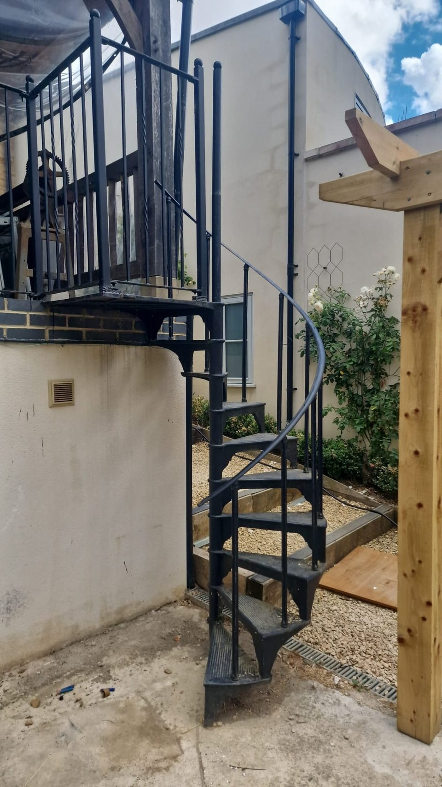
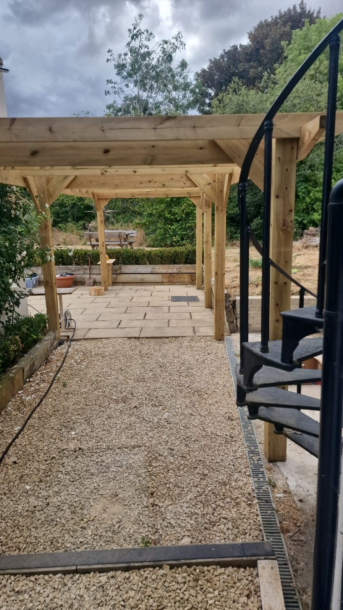
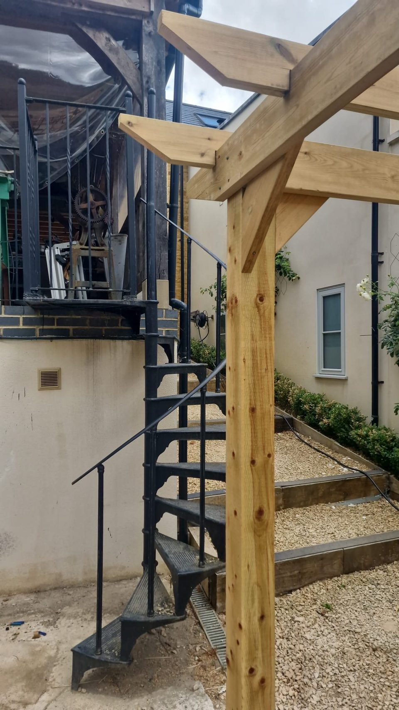
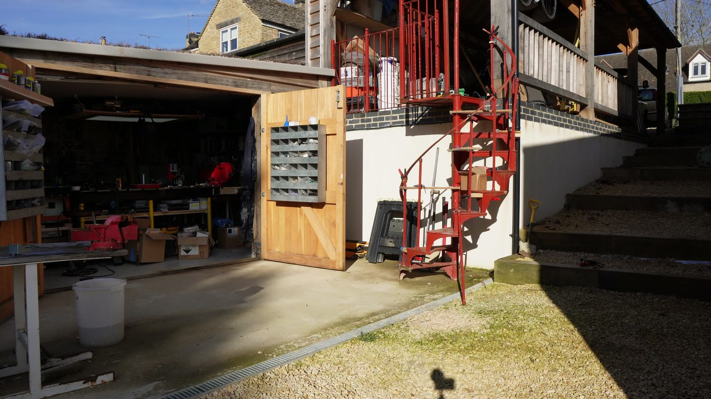
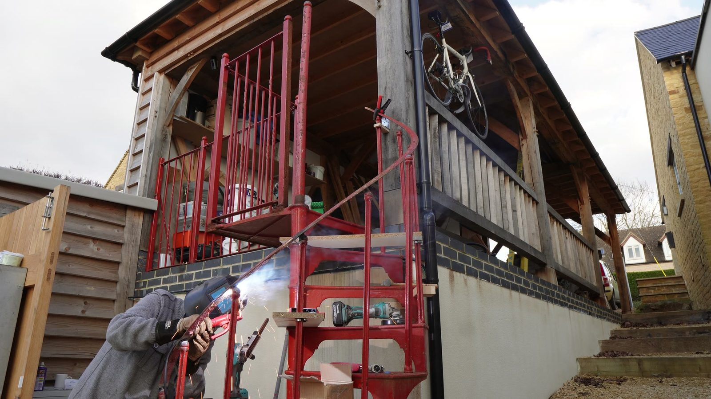
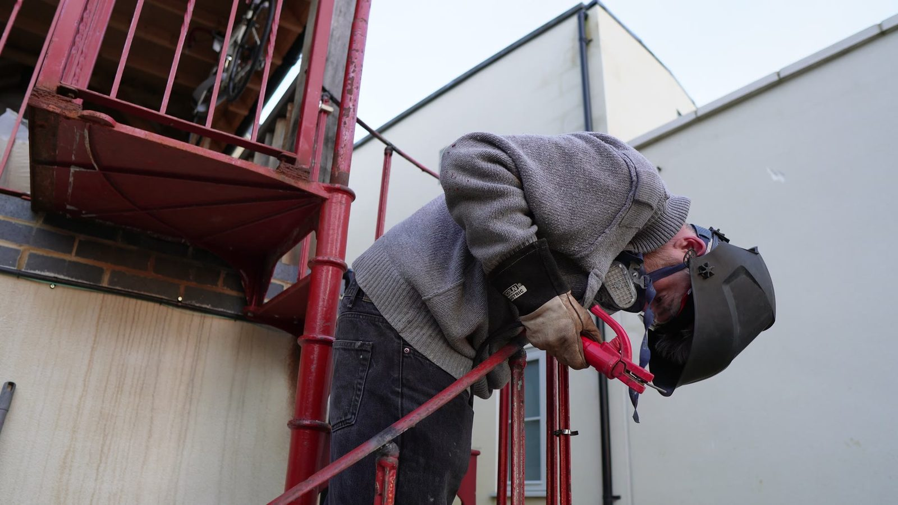
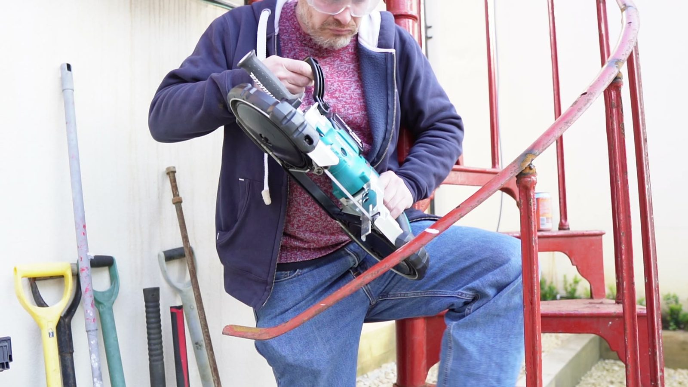

Handrail work
Architecture / fabrication / awkward geometry
Spiral Staircase
Spiral staircase into the courtyard. Steel, curves, handrail work, fitted round walls and pergola posts, in a courtyard with no straight line to measure from.
Looks calm, which usually means the hard bits are well hidden. Getting there was measuring, cutting, grinding and test-fitting against a courtyard that was already built and nowhere near square.

- Material
- —
- Rise and going
- —
- Fabrication
- —
- Finish
- —
- Regs and constraints
- —
- Build time
- —
The awkward bit
To be written up.
What I would change
To be written up.
Before state
The staircase it replaced
Footage starts with the red staircase that was there before. Nothing here started from a blank sheet - existing building, existing levels, existing walls.
Curved steel
Cutting curved steel
The constraint
Curves are unforgiving.
Spirals are compact and beautiful and leave no room for fuzzy thinking. Handrail, treads, clearances and surrounding structure all have to agree, especially in a courtyard that already exists.
The work
Measure, cut, offer up, repeat
No single difficult operation. Just a long loop of marking, cutting, grinding and checking the fit, each piece slightly better than the last.
The payoff
It should look inevitable.
Wanted it to look like it had always been there, rather than like something that got solved.
House-build logic
What it had to fit around
It sits against timber, masonry, glazing, railings and the garden. The engineering has to work and the thing also has to look right in the middle of a real, messy place.





